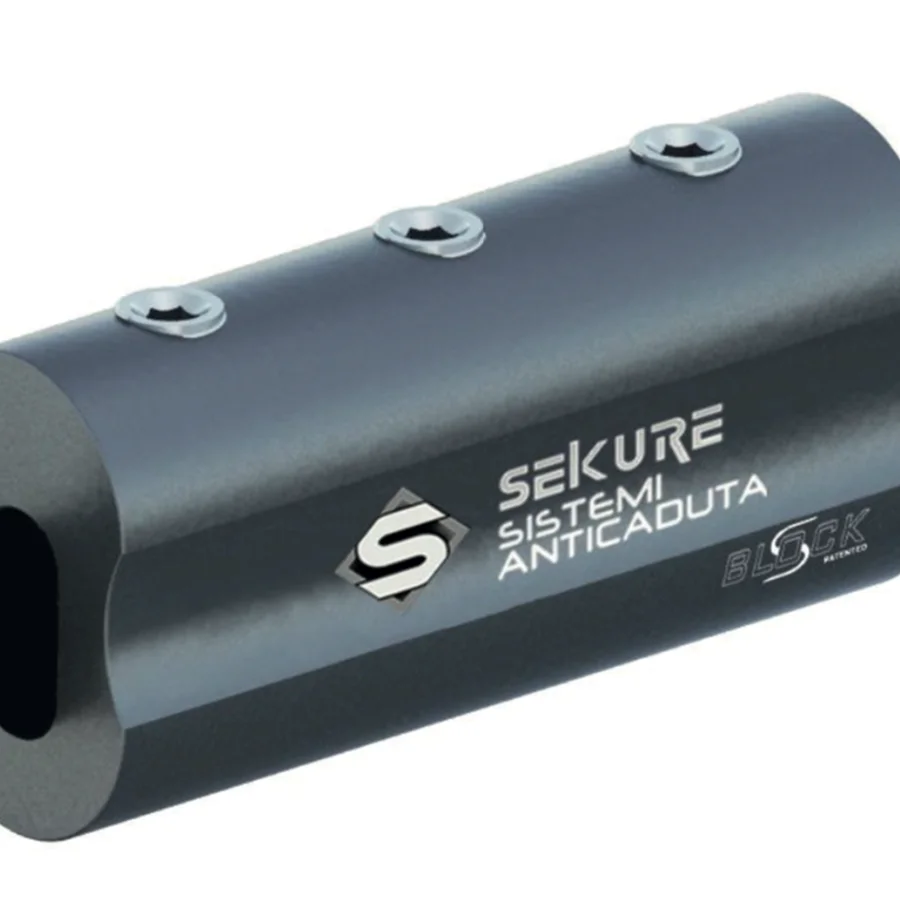
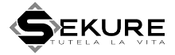
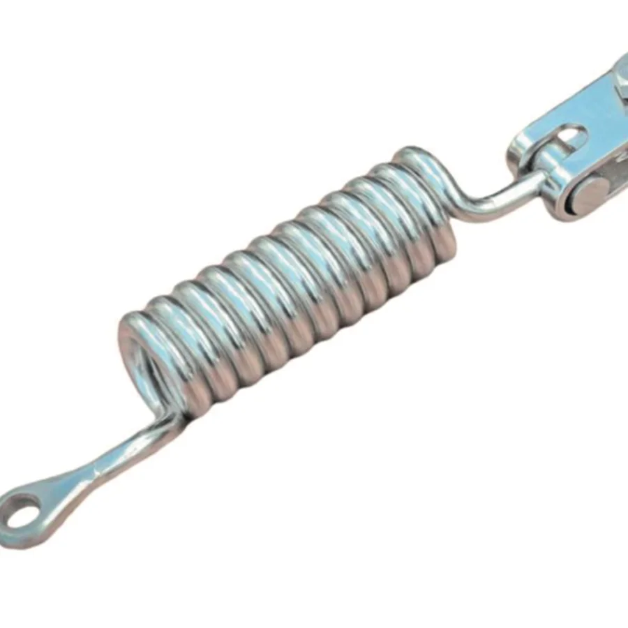
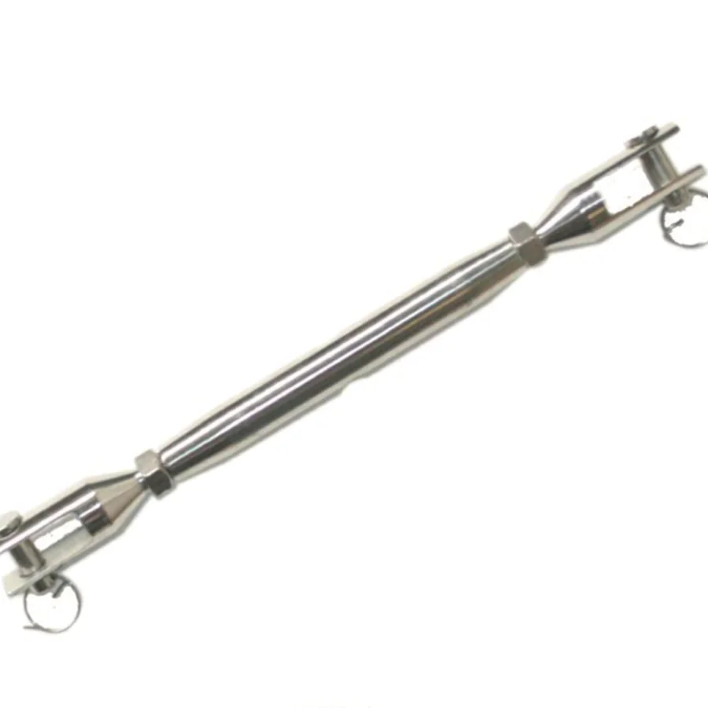
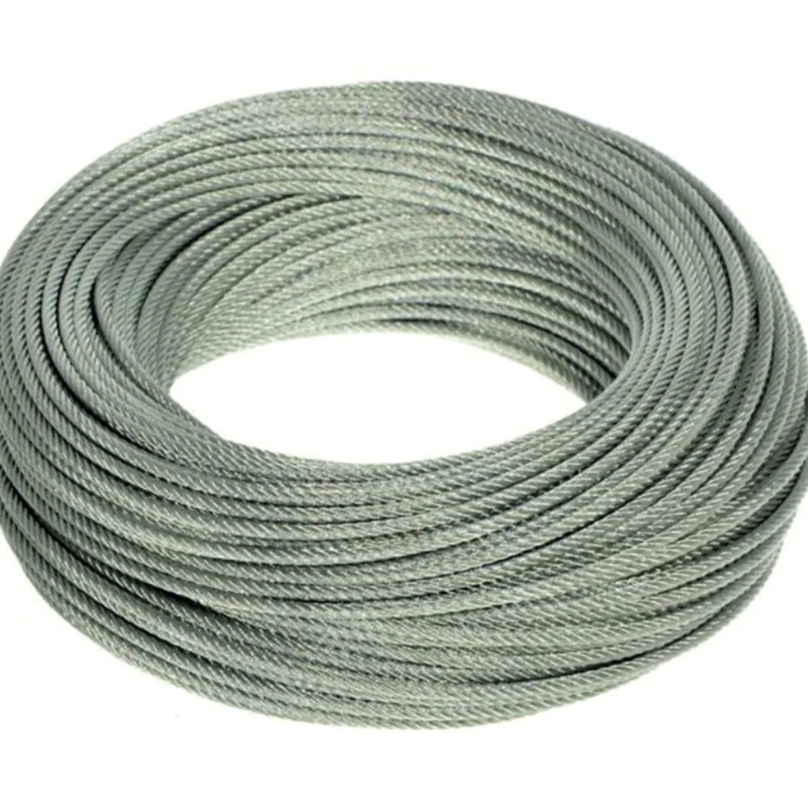
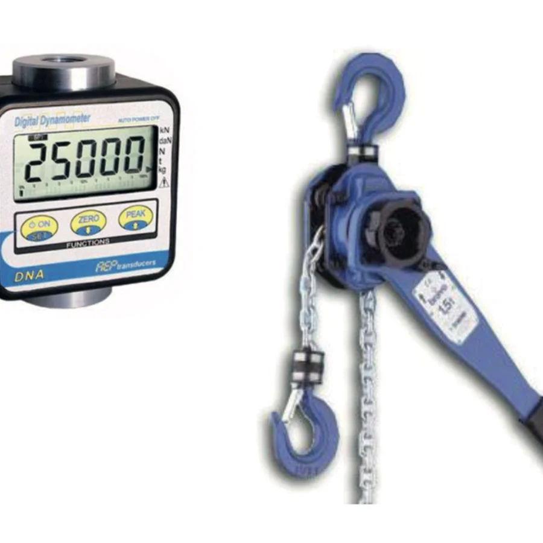
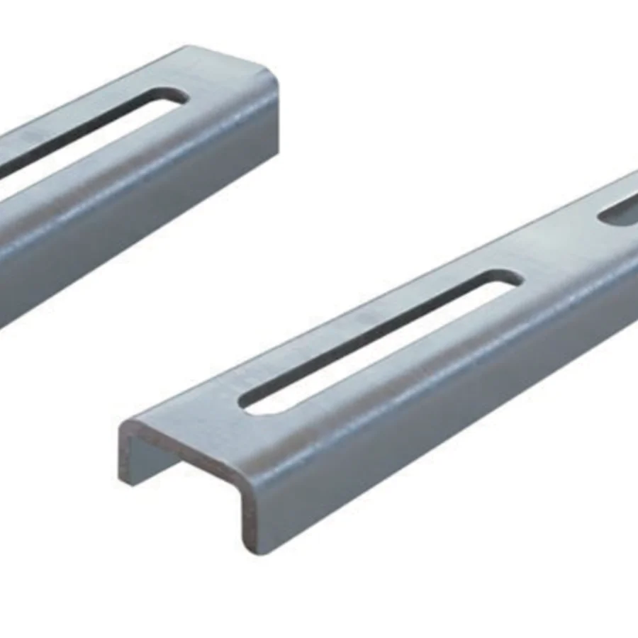
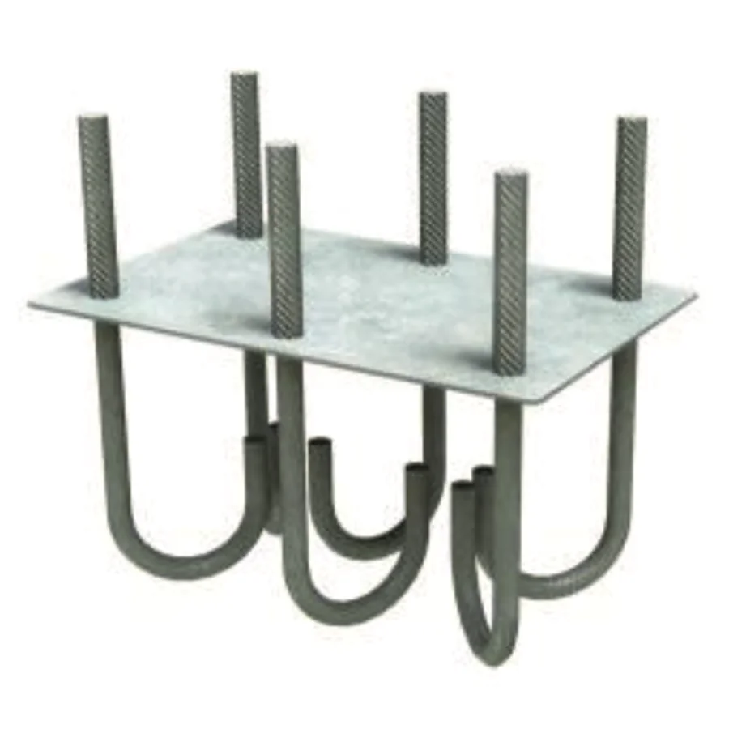

Safe & Lock
Blocchetto serracavo in alluminio · cavo Ø 8 mm
Blocchetto serracavo in alluminio per il serraggio del cavo metallico delle linee vita, conforme alle normative tecniche vigenti. Permette un assemblaggio veloce e pratico.

Sekure ha sede a Camposampiero (PD) e da oltre vent'anni sviluppa sistemi di protezione dalle cadute dall'alto.
Dispositivi di protezione individuale e accessori per il montaggio e la manutenzione dei sistemi anticaduta.

Blocchetto serracavo in alluminio · cavo Ø 8 mm
Blocchetto serracavo in alluminio per il serraggio del cavo metallico delle linee vita, conforme alle normative tecniche vigenti. Permette un assemblaggio veloce e pratico.

Assorbitore di energia ad occhiello/forcella · sistemi di tipo C
Assorbitore di energia elicoidale ad occhiello/forcella per sistemi anticaduta di tipo C.

Filetto metrico M14 · forcelle con perno di sicurezza
Canula chiusa a tubo con due forcelle alle estremità, dotate di perno con sicura e prive di saldature. Prodotto standard in filetto metrico M14, conforme a UNI EN ISO 9001.

Fune 7x19 · Ø 8 mm, acciaio inox AISI 316
Fune libera formato 7x19, diametro nominale 8 mm, in acciaio inox AISI 316. Disponibile in bobine da 100 o 50 metri lineari, conforme a UNI EN ISO 9001.

Strumenti per il controllo periodico dei sistemi anticaduta
Dinamometro digitale e alzatira per le verifiche in sito e il controllo periodico dei sistemi anticaduta.

Fissaggio a cravatta su strutture deboli
Contropiastra a C in acciaio inox e/o acciaio zincato, idonea a fissare gli elementi di ancoraggio su strutture deboli con il sistema a cravatta.

Completa di barre filettate
Dima per getto completa di barre filettate.